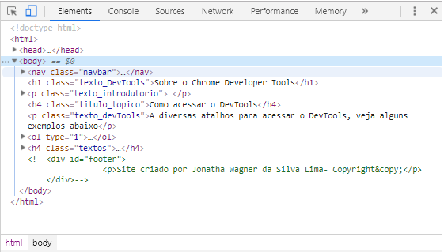

Sobre o Chrome Developer Tools
O Chrome Developer Tools é um conjunto de ferramentas para criação e depuração de páginas web inseridas no Google Chrome.O DevTools permite aos desenvolvedores web acesso mais detalhado sobre a página desenvolvida, sendo extremamente útil na hora de modificar o estilo da página
Como acessar o DevTools
A diversos atalhos para acessar o DevTools, veja alguns exemplos abaixo
- Windows
- Pressione a tecla F12
- Pressione as teclas CTRL + SHIFT + I
- MacBook
- pressione as teclas CMD+OPT+I
Ao fazer isso você verá no canto direito ou abaixo da tela do seu computador este menu
- Algumas abas do Devtools